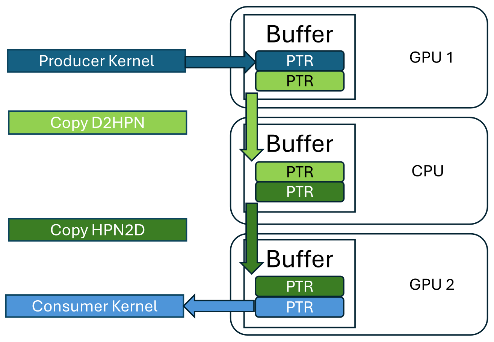
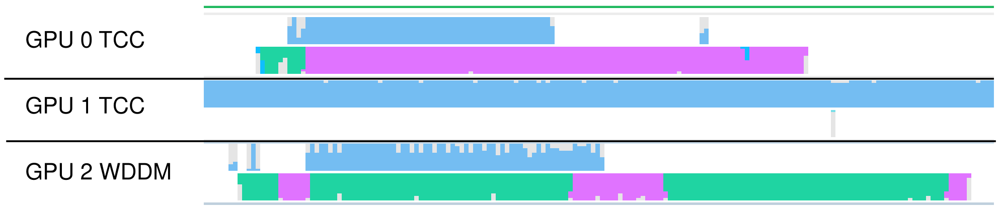

GPU MODE Lecture 10: Build a Prod Ready CUDA library
- GPU MODE Lecture Notes: My notes from the GPU MODE reading group lectures run by Andreas Kopf and Mark Saroufim.
- Introduction
- Relevant CUDA Concepts
- The CUDA Ninja’s Motivation: Why Create Libraries?
- Automatic TV: Understanding the Application and its Challenges
- Library Challenges: Abstraction vs. Performance
- Use Case 1: GPU Communication Manager
- Use Case 2: CUDA Layers for Image Preprocessing
- Conclusion and Future Directions
- YouTube Recording: Lecture 10: Build a Prod Ready CUDA library
- Slides: Lecture 10: Building production ready CUDA libraries
Introduction
Speaker Introduction
- Oscar Amoros Huguet: Professional CUDA developer and active community member.
- Background:
- Started with OpenCL for processing 3D volumes (wave propagation simulation and medical imaging).
- Worked with Barcelona Supercomputing Center on OmpSs (cluster programming abstraction).
- Taught OpenSphere Encoder and computer science topics at the University of Barcelona.
- Co-authored papers on OpenCL and related topics.
- Created “Simple OpenCL” library (linked by Khronos Group).
- Ported Boost Compute’s OpenCL code to HSAIL (GPU assembly).
- Currently works at Mediapro on Automatic TV, a soft real-time C++ and CUDA-based application.
Lecture Structure
- Review of Relevant CUDA Concepts: GPU communication, streams, latency hiding, kernel fusion.
- The CUDA Ninja’s Motivation for Library Creation: Addressing practical challenges in a production environment.
- Use Cases:
- GPU Communication Manager: Optimizing data transfer between different memory spaces.
- CUDA Layers for Image Preprocessing: Accelerating common image processing operations for tasks like neural network inference.
- Open Source Project: Discussion of an open-source CUDA library project.
Relevant CUDA Concepts
- Focus: Host-side optimization for real-world applications.
- Tools: NVIDIA Nsight Systems for profiling and identifying bottlenecks.
- Key Concepts:
- GPU Memory Copies (
cudaMemcpyAsync): Data transfer between CPU and GPU or between GPUs. - CUDA Streams: Enabling asynchronous execution of kernels and memory copies.
- Latencies and Latency Hiding: Overlapping computation and data transfer to minimize idle time.
- Kernel Fusion (Vertical and Horizontal): Combining multiple kernels to reduce overhead.
- Memory-Bound Kernels: Performance limited by memory bandwidth.
- Compute-Bound Kernels: Performance limited by computational capacity.
- GPU Memory Copies (
The CUDA Ninja’s Motivation: Why Create Libraries?
- Initial Expectations (Ideal Scenario):
- Bug-free, well-tested CPU code.
- Unit tests for performance benchmarking and validation.
- Reality in a Startup Environment:
- Collaboration with Non-CUDA Experts: Computer vision specialists, C++ application developers, etc.
- Need for Real-Time Prototyping: Enabling quick iteration and testing of computer vision algorithms.
- Performance Bottlenecks in Production: Handling larger datasets and multiple cameras demanded further optimization beyond initial prototypes.
- QA and Performance Measurement: Establishing performance benchmarks and cost goals.
- The Need for Automation: Repetitive optimization tasks and the desire to empower non-CUDA programmers led to the idea of creating libraries and abstractions.
Automatic TV: Understanding the Application and its Challenges
- Automatic TV: A software for automated sports recording that tracks the game and provides dynamic camera views.
- Functionality:
- Uses multiple fixed 4K cameras as input.
- Stitches camera feeds to create a seamless panoramic view.
- Employs AI (computer vision and neural networks) for player tracking, object detection, and camera switching.
- Generates a Full HD output video with enhanced image quality and features (scoreboard overlays, etc.).
- Performance Challenges:
- Real-time/Soft Real-time Processing: Maintaining a smooth output video with minimal delay.
- Multi-GPU Support: Distributing the processing workload across up to three GPUs for increased throughput.
- Efficient GPU Communication: Minimizing the overhead of data transfer between GPUs and the CPU.
Library Challenges: Abstraction vs. Performance
- Key Challenges:
- Performance: Achieving optimal performance comparable to hand-tuned CUDA code.
- Abstraction: Hiding CUDA complexities and providing an easy-to-use interface for non-CUDA programmers.
- Balancing Abstraction and Performance: Finding the right level of abstraction that simplifies usage without significantly sacrificing performance.
- User Requirements: Understanding the target users’ needs and preferences (level of CUDA knowledge, performance expectations, etc.).
- API Design: Creating an intuitive and familiar API that integrates seamlessly with existing workflows.
Use Case 1: GPU Communication Manager
Problem Definition: Efficient Data Transfer
- Goal: Create a system for efficient data transfer (e.g., images) between different memory spaces (CPU, GPU, CPU pinned memory).
- Memory Spaces:
- CPU Memory: Standard system RAM.
- GPU Memory: Dedicated memory on the graphics card.
- CPU Pinned Memory: A special type of CPU memory that can be directly accessed by the GPU, eliminating the need for an intermediate copy.
- CUDA memcpy: The standard CUDA function for transferring data between memory spaces.
Requirements and Considerations
- Zero Allocation During Runtime: Allocate all necessary memory upfront to avoid blocking CPU threads during real-time processing.
- Handling Same Memory Space Transfers: Optimize for cases where the source and destination memory spaces are the same, avoiding unnecessary copies.
- Minimizing CPU Thread Blocking: Ensure the CPU thread responsible for scheduling CUDA work remains responsive and is not blocked by memory operations.
Memory Space Combinations and Copy Strategies
| Source Memory Space | Destination Memory Space | Desired Copies | CUDA memcpy Strategy |
|---|---|---|---|
| CPU | CPU | 0 | No copy |
| CPU Pinned | CPU Pinned | 0 | No copy |
| GPU | GPU | 0 | No copy |
| CPU | CPU Pinned | 1 | cudaMemcpyHostToHost |
| CPU Pinned | CPU | 1 | cudaMemcpyHostToHost |
| CPU | GPU | 2 | cudaMemcpyHostToHost (CPU to CPU Pinned) followed by cudaMemcpyHostToDevice |
| GPU | CPU | 2 | cudaMemcpyDeviceToHost followed by cudaMemcpyHostToHost (CPU Pinned to CPU) |
| CPU Pinned | GPU | 1 | cudaMemcpyHostToDevice |
| GPU | CPU Pinned | 1 | cudaMemcpyDeviceToHost |
| GPU | GPU (Same Device) | 0 | No copy |
| GPU | GPU (Different Devices, Peer-to-Peer) | 1 | cudaMemcpyPeerAsync (if supported) |
| GPU | GPU (Different Devices, No Peer-to-Peer) | 2 | cudaMemcpyDeviceToHost followed by cudaMemcpyHostToDevice |
- Peer-to-Peer Communication: Direct data transfer between GPU memories without involving the CPU, achievable through NVLink or PCI Express (if supported by the hardware and drivers).
- Manual Pinned Memory Allocation: Bypassing CUDA runtime’s automatic pinned memory allocation to prevent CPU thread blocking.
Overcoming Sequential Data Transfer Bottlenecks
- Problem: Sequential memory copies and kernel launches introduce significant delays in a multi-GPU pipeline.
- Solution: Introduce delays (buffers) and utilize CUDA streams to enable parallel execution of kernels and memory transfers.
Producer-Consumer Model
- Traditional CPU-Based Model:
- Producer: A thread that generates data and writes it to a shared buffer.
- Consumer: A thread that reads and processes data from the shared buffer.
- Buffer: Manages access to the shared data, ensuring thread safety.
- Key Features:
- Task Parallelism: Producer and consumer can operate concurrently.
- Variable Buffer Size: Adjusts to fluctuations in producer and consumer execution times.
Adapting Producer-Consumer for GPU Communication
Iterative Memory Manager: A specialized buffer designed for GPU communication in iterative applications.

Slide 24 Key Features:
- Iteration-Based Synchronization: All asynchronous operations (kernels and copies) are synchronized at the end of each iteration.
- Ping-Pong Buffers: Utilizes at least two pointers (memory regions) to enable concurrent reading and writing.
Example:
- A kernel writes its output to a pointer in the manager.
- A copy operation transfers data from that pointer to another pointer in a different memory space.
- Another kernel reads from the second pointer.
- Pointers are swapped at the end of each iteration to ensure continuous data flow.
Delay Buffers and Optimizing Memory Manager
- Delay Buffer: A buffer that introduces a fixed delay in the data flow.
- Optimization: When a delay buffer is used, the memory manager can directly access data from the delay buffer’s pointer, eliminating the need for an extra copy.
- Example:
- A kernel writes to a delay buffer.
- Instead of copying from the kernel’s output to the memory manager, the manager directly reads from the delay buffer after the specified delay.
Provider-Taker Model: An Abstraction for Memory Management
- Motivation: Introduce a new abstraction to simplify the interaction with the memory manager.
- Key Concepts:
- Taking: Requesting a pointer from the memory manager (the manager allocates and owns the pointer).
- Providing: Supplying a pointer to the memory manager (the caller allocates and owns the pointer).
- Ownership:
- Taking: The memory manager owns the pointer.
- Providing: The caller owns the pointer.
- Difference from Producer-Consumer:
- Producer-Consumer focuses on data movement.
- Provider-Taker focuses on pointer ownership and allocation responsibility.
Iterative Memory Manager Interface
Data Structure: Define a class representing the data to be transferred.
struct DataInfo { int numElements; int elemSizeInBytes; MemorySpace memSpace; };- Includes information like width, height, and memory space.
Producer/Consumer Roles: Define an enum to specify whether the producer and consumer will take or provide pointers:
enum Actions { ProducerProvides, ProducerTakes, ConsumerProvides, ConsumerTakes};Memory Manager Initialization:
DataInfo producerDataInfo{1024, 4, HostPageable}; DataInfo consumerDataInfo{1024, 4, Device_1}; Data ptrToProduce(producerDataInfo); Data ptrToConsume(consumerDataInfo); //Initialization MemoryManager<ProducerProvides, ConsumerProvides> manager(producerDataInfo, consumerDataInfo);Managing Data Transfer:
int delay = manager.getTotalDelay(); // Query delay generated by the manager manager.manage(ptrToProduce, ptrToConsume); // UsageUnderstanding Provide and Take:
- Provide: Pass data structures as arguments to
manage(). The caller is responsible for allocating these data structures. - Take: The
manage()function returns pointers to data structures allocated by the manager.
- Provide: Pass data structures as arguments to
Memory Manager Configurations
- Four Possible Configurations:
- Take-Take: Producer and consumer both take pointers from the manager.
- Provide-Provide: Producer and consumer both provide pointers to the manager.
- Take-Provide: Producer takes a pointer, consumer provides a pointer.
- Provide-Take: Producer provides a pointer, consumer takes a pointer.
- Memory Space Awareness: The memory manager automatically handles copies based on the specified memory spaces of the producer and consumer data.
- Zero-Copy Optimization: If the source and destination memory spaces are the same, the manager performs no copy and simply forwards the pointer.
Example: Memory Manager with a Delay Buffer
- Scenario:
- A kernel writes to a buffer.
- A delay buffer stores the kernel’s output.
- Another kernel reads from the delay buffer after a fixed delay.
- Memory Manager Configuration: Take-Provide (producer takes, consumer provides).
- Zero-Copy Optimization: If the delay buffer and the consumer kernel are in the same memory space, no copy is performed.
Timeline Analysis: Achieving Parallelism
- Multi-GPU Pipeline with Delay Buffers:
- Kernels on different GPUs execute in parallel.
- Memory transfers are overlapped with computation using CUDA streams.
- Benefits:
- Maximizes GPU utilization.
- Reduces overall processing time.
Real-World Application: Automatic TV’s GPU Pipeline
Automatic TV’s Implementation:
- GPU 0: Camera input processing, data transfer to CPU.
- GPU 1: AI processing (computer vision, neural networks).
- GPU 2: Output processing, data transfer to CPU for encoding.
NVIDIA Nsight Systems Analysis: Demonstrates efficient parallelism between compute and data transfer operations.

Slide 45 
Slide 45
Potential Application: Multi-GPU Neural Network Training
- Proposed Idea: Apply the Iterative Memory Manager concept to multi-GPU neural network training.
- Potential Benefits:
- Parallelize forward and backward passes across multiple GPUs.
- Overlap computation with data transfer of intermediate results.
- Challenges:
- Requires sufficient GPU memory to store multiple copies of intermediate data.
- Complexity of integrating with existing training frameworks.
Use Case 2: CUDA Layers for Image Preprocessing
Problem: Accelerate common image preprocessing operations for tasks like neural network inference.
GitHub Project: cvGPUSpeedup
OpenCV CUDA vs. Custom CUDA Layer:
// OpenCV version cv::cuda::resize(d_input(crop), d_up, targetRes, 0., 0., cv::INTER_LINEAR, cv_stream); d_up.convertTo(d_temp, CV_32FC3, alpha, cv_stream); cv::cuda::subtract(d_temp, val_sub, d_temp2, cv::noArray(), -1, cv_stream); cv::cuda::divide(d_temp2, val_div, d_temp, 1.0, -1, cv_stream); cv::cuda::split(d_temp, d_output, cv_stream); // cvGPUSpeedup version cv::Scalar val_alpha(alpha, alpha, alpha); cvGS::executeOperations(cv_stream, cvGS::resize<CV_8UC3, cv::INTER_LINEAR>(d_input(crop), targetRes, 0., 0.), cvGS::convertTo<CV_8UC3, CV_32FC3>(), cvGS::multiply<CV_32FC3>(val_alpha), cvGS::subtract<CV_32FC3>(val_sub), cvGS::divide<CV_32FC3>(val_div), cvGS::split<CV_32FC3>(d_output));- OpenCV CUDA provides individual functions for operations like cropping, resizing, and color conversion.
- The custom CUDA layer fuses these operations into a single kernel, reducing overhead and improving performance.
Performance Gains: Significant speedups (e.g., 167x) achieved by fusing operations and optimizing memory access.
Section cut short due to time constraints for the live-stream.
Conclusion and Future Directions
- Key Takeaways:
- Libraries can significantly improve CUDA development by optimizing performance and providing abstractions for non-CUDA programmers.
- The Iterative Memory Manager is a powerful tool for managing data transfer in multi-GPU pipelines.
- CUDA layers can accelerate common image processing tasks, particularly beneficial for neural network inference.
- Future Work:
- Explore the application of the Iterative Memory Manager to multi-GPU neural network training.
- Further develop and refine the open-source CUDA layer library for image preprocessing.
- Improve the abstraction and usability of the libraries to make them more accessible to a wider audience.
I’m Christian Mills, a deep learning consultant specializing in practical AI implementations. I help clients leverage cutting-edge AI technologies to solve real-world problems.
Interested in working together? Fill out my Quick AI Project Assessment form or learn more about me.